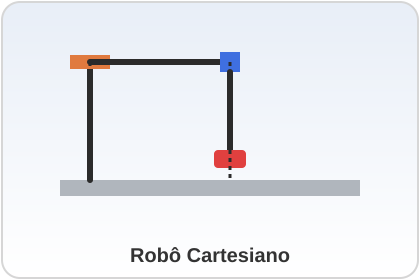

1. Robô Cartesiano
3 eixos lineares Também chamado de Gantry / PórticoConceito
O robô Cartesiano é o tipo mais simples de manipulador industrial. Ele se movimenta ao longo de três eixos lineares perpendiculares entre si — X, Y e Z — formando um sistema de coordenadas cartesianas. Quando montado sobre uma estrutura elevada que cobre toda a área de trabalho, é chamado de robô Gantry ou Pórtico.
Princípio de Funcionamento
Cada eixo é composto por um trilho linear (guia) e um motor (elétrico ou pneumático) que desloca um carro ao longo desse trilho. A combinação dos três deslocamentos lineares posiciona o efetuador final (garra, ventosa, ferramenta) em qualquer ponto dentro de um espaço de trabalho em formato de paralelepípedo (caixa retangular).
Principais Características Técnicas
| Característica | Valor típico |
|---|---|
| Graus de liberdade | 3 (X, Y, Z), podendo receber um 4º eixo de rotação no punho |
| Repetibilidade | ±0,01 mm a ±0,05 mm (alta precisão) |
| Espaço de trabalho | Retangular / cúbico, pode ser muito grande em gantries |
| Estrutura mecânica | Simples, alta rigidez |
| Programação | Simples, cinemática direta trivial |
Aplicações Industriais
- Corte e usinagem CNC (fresadoras e roteadoras CNC);
- Impressão 3D industrial;
- Pick and place de peças leves e médias;
- Paletização e movimentação de cargas em linhas de montagem;
- Aplicação de cola, solda e verniz em superfícies planas.
Integração com Automação e IoT
Encoders lineares em cada eixo enviam a posição em tempo real para o CLP ou controlador de movimento. Sensores de fim de curso e de vibração auxiliam na manutenção preditiva, enquanto a comunicação com o SCADA/MES normalmente ocorre via Ethernet Industrial (EtherCAT, Profinet) ou EtherNet/IP.